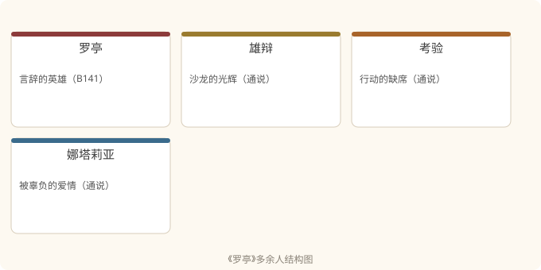

罗亭
一、基本信息
| 作者 | 屠格涅夫 |
|---|---|
| 成书/出版 | 1856年（作者页注记：Britannica——罗亭 (1856)） Ivan Turgenev — Encyclopaedia Britannica（百科全书） |
| 国别/地区 | 俄国 |
| 时代 | 近代 · 19世纪50年代 |
| 体裁 | 长篇小说 |
| 语言 | 俄语 |

《罗亭》多余人结构图（主题·结构图）
二、创作背景
作者页注记：罗亭、贵族之家、前夜——'（Britannica 列举）'；B141：'1856《罗亭》1859《贵族之家》1860《前夜》'。
Britannica（B141）：屠格涅夫——《父与子》(1862)作者（交叉）。
题材（通说待核）：'多余人'罗亭——言辞的英雄与行动的侏儒。
三、内容脉络
（通说待核）罗亭在达里娅庄园的雄辩与娜塔莉亚的考验。
（通说待核）'在哪里使用我的力量？'的失败回答。
四、主要人物表
| 人物 | 身份 | 说明 |
|---|---|---|
| 罗亭 | 多余人 | （B141 书名人物） |
| 娜塔莉亚 | 少女 | （通说待核） |
五、主题与艺术特点
- '多余人'谱系（B141 语境）。
- 言辞与行动的分裂（通说待核）。
- 1840年代思想史（通说待核）。
六、影响与评论
- Britannica：1856《罗亭》（B141 作者页注记）。
Ivan Turgenev — Encyclopaedia Britannica（百科全书） - Britannica：屠格涅夫为俄国文学'四大家'语境（作者页交叉）。
Ivan Turgenev — Encyclopaedia Britannica（百科全书）
七、阅读建议
难点
- '多余人'文学谱系。
- 贵族庄园的沙龙语境。
- 《罗亭》中译本（人民文学等——通说待核）。
- 俄文原版（公有领域）。
屠格涅夫长篇首选之一；与《父与子》对读。
八、待核实
- 罗亭/娜塔莉亚人名核对（通说）。
- 1856年发表（《现代人》说）待核。
- 结尾1848巴黎殉难细节待核。